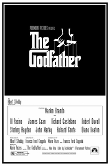

教父
剧情简介
纽约黑手党柯里昂家族的首领维托·柯里昂德高望重，却在拒绝参与毒品生意后遭敌对势力刺杀，身受重伤。远走他乡的小儿子迈克尔本与家族生意毫无瓜葛，为保护父亲逐步卷入其中，并在一系列流血冲突中展现出冷酷的头脑与手腕。父亲遇刺、兄长被害之后，迈克尔最终接掌家族，成为新一代教父，也从此走上孤独与权力的不归路。

纽约黑手党柯里昂家族的首领维托·柯里昂德高望重，却在拒绝参与毒品生意后遭敌对势力刺杀，身受重伤。远走他乡的小儿子迈克尔本与家族生意毫无瓜葛，为保护父亲逐步卷入其中，并在一系列流血冲突中展现出冷酷的头脑与手腕。父亲遇刺、兄长被害之后，迈克尔最终接掌家族，成为新一代教父，也从此走上孤独与权力的不归路。